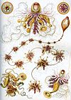

hydrozoa

Definition: Hydrozoa (hydrozoans; from Ancient Greek ὕδωρ (húdōr) 'water', and ζῷον (zôion) 'animal') is a taxonomic class of individually very small, predatory animals, some solitary and some colonial, most of which inhabit saline water. The colonies of the colonial species can be large, and in some cases the specialized individual animals cannot survive outside the colony. A few genera within this class live in freshwater habitats. Hydrozoans are related to jellyfish and corals and belong to the phylum Cnidaria.
Source: Wikipedia
Wikipedia Page (Something wrong with this association? Let us know.)
Wikidata Page (Something wrong with this association? Let us know.)